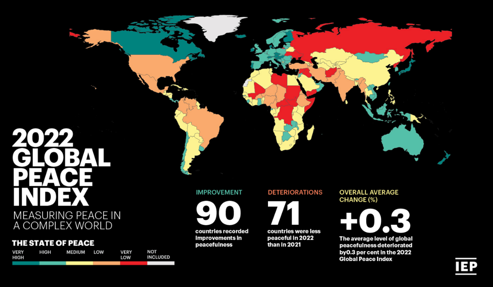

Under et år før Martin Luther King Jr.’s blev myrdet, holdt han en tale ved National Conference for New Politics i Chicago. Ved denne tale beskrev han ’samfundets tre onder’: racisme, økonomisk udnyttelse og militarisme.
”Vi siger til vores nation i aften, vi siger til vores regering, vi siger endda til vores FBI, vi vil ikke blive chikaneret, vi vil ikke nedlægge vores samvittighed, vi vil ikke blive skræmt, og vi vil blive hørt.” (Martin Luther King Jr.)
Det er nu mere end 50 år siden, at King udtalte dette, men disse tre onder er bestemt ikke fortid. Faktisk ligner det, at det er mere nutid end det er fortid.
Racisme
”Denne rigdom – nogle gange kaldet 'kapital' – skulle investeres et sted. Det blev brugt til at betale for industrialiseringen af Europa. Så den transatlantiske slavehandel og plantagerigdom var de vigtigste årsager til kapitalismens vækst i Europa.” (Washington Alcott)

Den vestlige verden og kapitalisme blev opbygget på racisme, og nutidens undersøgelser viser, at mørke mennesker stadig tjener meget mindre end hvide i gennemsnit. I USA tjener den gennemsnitlige hvide familie næsten dobbelt så meget, som en gennemsnitlig mørk familie.
Nogle mener eventuelt, at dette er på grund af valg af uddannelse og forskellige former for talent, men en undersøgelse fra 2003 viser, at 74% af amerikanske arbejdsgivere havde en form for fordom mod mørke personer, og samtidig tjener mørke generelt mindre end hvide i de samme industrier.

Ifølge en undersøgelse, publiceret af Gallup i 2021, er andelen af mørke, som mener at ’forholdet mellem hvide og mørke er godt’, faldet med 37% siden år 2001. Det betyder, at mørke mener, at racisme i øjeblikket er værre end det har været i flere årtier.
Martin Luther King Jr. mente, at adskillelsen var ondskab. Han mente også, at racemæssig og økonomisk uretfærdighed går hånd i hånd.
Fattigdom
I løbet af pandemien er omkring 100 millioner flere mennesker globalt begyndt at leve under ekstrem fattigdom.

FN’s verdensmål nummer 1 hedder, at vi skal afskaffe alle former for fattigdom inden 2030.
Det er ikke selve fattigdommen, som King mener er ondskab. Det er uligheden mellem rige og ekstremt fattige mennesker. Det nederste 50% af verden ejer så lidt som 1% af verdens rigdomme, mens det øverste 1% ejer over halvdelen af verdens rigdomme. For at sætte det i perspektiv ejer det øverste 1% dobbelt så meget, som de resterende 99% af den rigdom, som er skabt i de seneste to år.
Under den første nedlukning mistede globale arbejdere over 25 billioner danske kroner (25.000.000.000.000). I gennemsnit har de ti rigeste i verden derimod fordoblet deres rigdomme i samme periode.
”De fleste mørke mennesker i vores land forgår stadig på en ensom ø af fattigdom, i midten af et stort ocean af materiel velstand.” (Martin Luther King Jr.)
Militarisme
Militarisme er når en stat etablerer et militær til brug for at udvide sine grænser - altså at få mere land. King mener, at denne grådighed er ondskab.
Dette kan nemt perspektiveres til Rusland og Ukraine-krigen. Rusland mener, at de ejer Ukraine, da de to lande har en lignende historie og tidligere har været en del af denne samme union; Sovjetunionen.

Dette kort viser fredsindekset i hvert land. Man kan se, at 71 landes sikkerhed er blevet forværret i 2022.